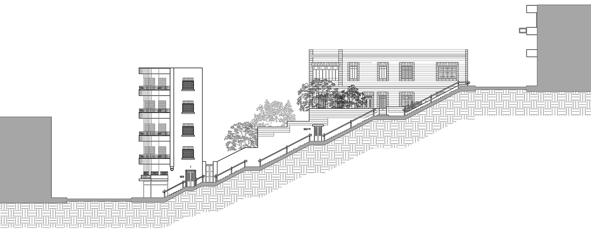
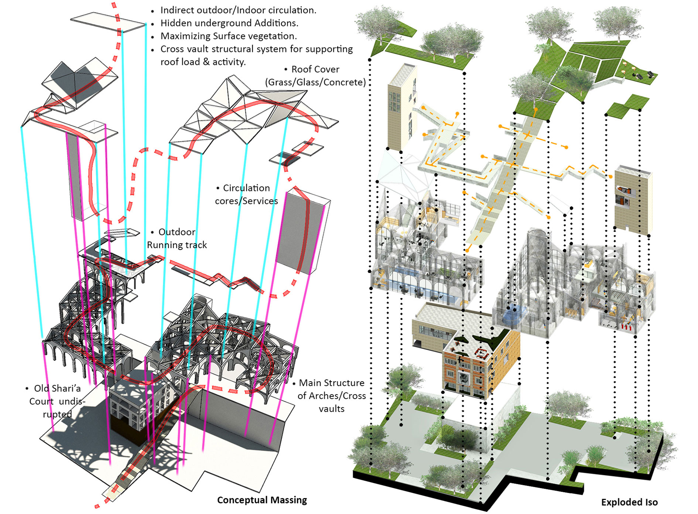
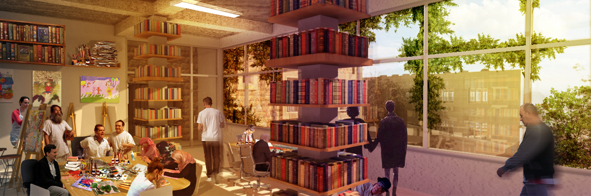
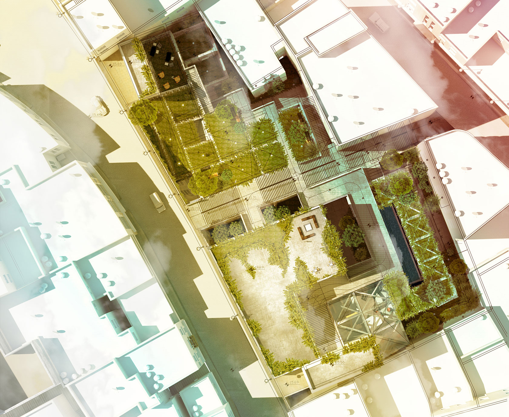
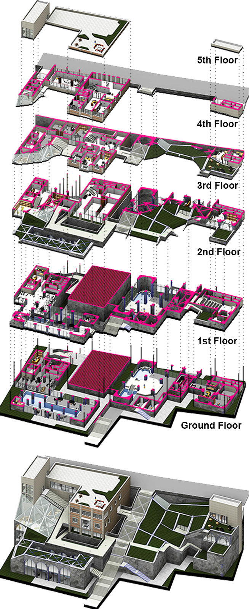

Heterotopia of Acceptance
Fabricated Turkish bath roof park - Wilderness Therapy
4th Floor Art Studio - Art Therapy
Site Plan
Staircase Section
Ground Floor Turkish Bath - Escapsim/Leisure Methods
Ground Floor Pool - Leisure Methods
Percussion room - Music Therapy
Psychiatrist office
Heterotopia of Acceptance
A Refuge in the Decayed Historic Metropolis of Amman
Year | 2018 BSc. in Architecture | Graduation Project
Type | Adaptive-reuse
The project seeks to find, design and adapt a place of heterotopia in the decayed, historic Amman to become a heterotopia of acceptance where people who are troubled with their mental illnesses or "concerns" can find refuge in such a place and maybe feel reconciled. Adapted from an old shari’a court house into a center of alternative treatments for psychological disorders. The project focuses on utilizing different fields of interest among youth and adults alike as; art, music, dance, etc. combined with psychiatry as a method for curing or adjusting with their disorders in a growth promoting way. Psychological disorders definitions are a power in the world of mental health, vastly spreading among youth in our society. Having said that; Deviant, Distressful and Dysfunctional patterns of thoughts, feelings and behaviors occur. Therefore this project tackles this issue that has been rising in our society in a less conventional matter as acceptance of this behavior and coping with it is key rather than trying to mend it to fit the norm.
 This project challenges the boundaries of the surrounding environment and their co-relation with psychological disorders in a unique sense of adaption. Adapted from an old shari'a court house into a center of alternative treatments for psychological disorders. The design approach was drawn from layers within the context overlapping in the project site in an indirect way as "spaces of Taboo/Heterotopic spaces" were subjected to the most drastic alteration in a concealed matter as most of the project is hidden underground where major activities occur. The project is not meant to ignore medical treatments for such cases, but at the same time proposes different recreational methods/approaches for treatment eg; Art, Dance, Music Therapy as well as some unorthodox methods as; Turkish bath, Workout and pool areas to serve in leisure and Escapism.
Adaptive reuse Interventions were focusing on creating minimal visible interventions in an area that is highly clustered, congested and lacks proper open green spaces as well as maintaining the existing building materials with minor interior space redesign and the introduction of a new mass on one side of the building.
The structur's cover consists of a prevailing green rooftops that follow the degradation of the staircase going downwards with glass installations in areas were daylight is most needed. Building structure consisted of concrete cross vaults and arches were implemented in the design to provide additional support for the roof structure and to give a picturesque feel to the space below with heights and materials that don't exceed and intervene within the surrounding context.
Spaces facilitated, therapeutic facilities that are mainly located in the old shari'a court house with the Turkish bath and the pool areas filling in the empty pockets that surround it, interconnected by the running track and the ground floor landscape path.
Circulation journey was devised in a vertical and horizontal maze like pattern pacing through and by spaces, as well as containing multiple entrances from the upper street and from the outdoor staircase.
The site acts as a commuting street for other destinations, but itself has no impact on individuals minds due to the lack of everyday consumer services and attractions - The prevailing idea was revitalization and adaption from an area of commerce to a more vibrant, green space - Ideologies were shaped mostly by memories of what they witnessed and what was replaced after.
The block in which the site resides in serves as a bufferzone between the highly dense, historic downtown valley market area and the commercial youth hub in jabal Amman conveying a heterotopia in itself.
The site consists of the shari’a court and the 3 lands enclosing it all open to one upper street and closed from behind by the surrounding buildings mainly by the clothes wholesale shops intersected and utilized by the staircases that connect this area to other places.
